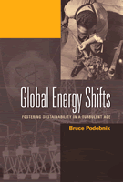

<body bgcolor="#FFFFFF" text="#000000" link="#0000FF" vlink="#CC0000" alink="#CC0000"><center><hr width="350" size="1" align="center" noshade>A timely look at key transitions in energy use over the past 100 years<hr width="350" size="1" align="center" noshade><p><a href="https://cdcshoppingcart.uchicago.edu/Cart/ChicagoBook.aspx?ISBN=9781592132935&&PRESS=temple" target="_top">Buy this book!</a> | <a href="https://cdcshoppingcart.uchicago.edu/Cart/Cart.aspx?PRESS=temple" target="_top">View Cart</a> | <a href="https://cdcshoppingcart.uchicago.edu/Cart/Cart.aspx?PRESS=temple" target="_top">Check Out</a></p><p></p></center><!--none//--><h1>Global Energy Shifts</h1>
<H2>Fostering Sustainability in a Turbulent Age</H2>
<h3>Bruce Podobnik</h3>
<P>cloth 1-59213-293-6 $79.50, Nov 05, <FONT COLOR=#990033>Available</FONT>
<br>paper 1-59213-294-4 $29.95, Nov 05, <FONT COLOR=#990033>Available</FONT>
<br>Electronic Book 1-59213-804-7 $29.95 <FONT COLOR=#990033>Available</FONT>
<BR> 240 pp
6x9
24&nbsp;figures 2&nbsp;halftones
</P><BLOCKQUOTE><I>"Energy transitions are inherently complex and long-drawn affairs, extending over generations. That is why any serious appraisal of future options and changes should be informed by the history of past shifts, concerns and accomplishments: Podobnik's book is a wide-ranging and well-written contribution to this critical understanding."</i>
<br>&#151<b>Vaclav Smil</b>, Distinguished Professor, University of Manitoba<i></I></BLOCKQUOTE>
<p>In the latter part of the nineteenth century, the citizens of Great Britain faced a formidable challenge: coal resources seemed destined to run out and commentators were unable to foresee a viable alternative fuel. To address the crisis, military strategists were urged to seize control of coal in foreign lands, and companies were encouraged to increase domestic production of the resource.
<p>In <i>Global Energy Shifts</i>, Bruce Podobnik draws intriguing parallels between the "coal panics" that once swept through Britain and the "oil panics" that grip the world today. His concise history of global energy use contextualizes the coal and oil scares, demonstrating how the convergence of specific geopolitical, commercial, and social conditions can generate rapid and far-reaching transformations in the energy foundations of our world.
<p>Ultimately, Podobnik informs readers on how a "crisis" of one fuel system is quickly averted with the introduction of another, and describes opportunities for shifting our problematic, oil-based system toward a renewable energy system.
<BR>&nbsp;<h2>Excerpt</h2><P>Excerpt available at <a href="http://www.temple.edu/tempress">www.temple.edu/tempress</a></p>
<BR>&nbsp;<h2>Reviews</h2>
<p><i>"</i>Global Energy Shifts<i> aims to recover the role of geopolitical rivalry, corporate competition, and social movements in shaping patterns of energy production and consumption via a grand historical survey. Podobnik is successful at de-naturalizing these transitions: they are shown to the negotiated/contested outcomes of interactions between states, capital and society as opposed to emerging from any 'inherent' properties of coal or oil. This is a significant contribution, and one made all the more forceful by the innovative use of diverse data sources."</i>
<br>&#151<b>Gavin Bridge</b>, University of Manchester
<p><i>"Podobnik has gathered an impressive amount of data to bolster his argument for the inclusion of an account of social conflict in the story of energy shifts. The use of data is very helpful in telling this story. The material is well laid out and is presented in a coherent manner which allows the reader to gain a greater understanding of the dynamics of global energy systems. The author has constructed a compelling argument for the need to examine social as well as political and economic factors when assessing energy shifts."</i>
<br>&#151;<b><i>The Journal of Sociology and Social Welfare</i></b>
<p><i>"Podobnik�s book makes for engaged�reading�[I]t shows how politics and economics cannot be divorced from energy technology systems."</i>
<br>&#151;<b><i>Chemical Heritage Newsmagazine</i></b>
<BR>&nbsp;<h2>Contents</h2><P>
<p>List of Illustrations
<br>Acknowledgments
<br>1. Global Energy Shifts in World Historical Perspective
<br>2. The Rise of Coal
<br>3. Conflict in Coal and the Emergence of New Energy Systems
<br>4. The First Period of Crisis
<br>5. The Rise of Oil, Natural Gas, and Nuclear Power
<br>6. The Second Period of Crisis
<br>7. Toward a Sustainable Energy System
<br>Appendix A: Sources and Methods Used to Compile Energy Data
<br>Appendix B: Glossary of Petroleum Company Names
<br>Appendix C: Sources of Strike Data in Energy Industries
<br>Notes
<br>Bibliography
<br>Index
</P><BR>&nbsp;<H2>About the Author(s)</H2>
<table><tr><td valign="top"><img src="/tempress/authors/1700_au.gif" height="90" width="75"></td><td width="100%" valign="middle"><p><b>Bruce Podobnik</b> is Associate Professor of Sociology at Lewis and Clark College. He is co-editor (with Thomas Reifer) of <i>Transforming Globalization: Challenges and Opportunities in the Post 9/11 Era</i>, as well as a number of articles on environmental and social movement topics.</P></td></tr></table>
<BR><H2>Subject Categories</H2>
<p><A HREF="/tempress/nature.html" TARGET="_top">Nature and the Environment</a>
<BR><A HREF="/tempress/sociology.html" TARGET="_top">Sociology</a>
<BR><A HREF="/tempress/geography.html" TARGET="_top">Geography</a>
</p>
<p align="center"><a href="https://cdcshoppingcart.uchicago.edu/Cart/ChicagoBook.aspx?ISBN=9781592132935&&PRESS=temple" target="_top">Buy this book!</a> | <a href="https://cdcshoppingcart.uchicago.edu/Cart/Cart.aspx?PRESS=temple" target="_top">View Cart</a> | <a href="https://cdcshoppingcart.uchicago.edu/Cart/Cart.aspx?PRESS=temple" target="_top">Check Out</a></p><p><font face="Arial" size="1"><a href="copyright.html" onMouseOver="window.status='Web Copyright Policy';return true;" onMouseOut="window.status=''" title="Web Copyright Policy">&copy;</a> 2015 <a href="http://www.temple.edu" target="new" onMouseOver="window.status='Link to Temple University home page';return true;" onMouseOut="window.status=''" title="Link to Temple University home page">Temple University</a>. All Rights Reserved. http://www.temple.edu/tempress/titles/1700_reg.html</font></p>